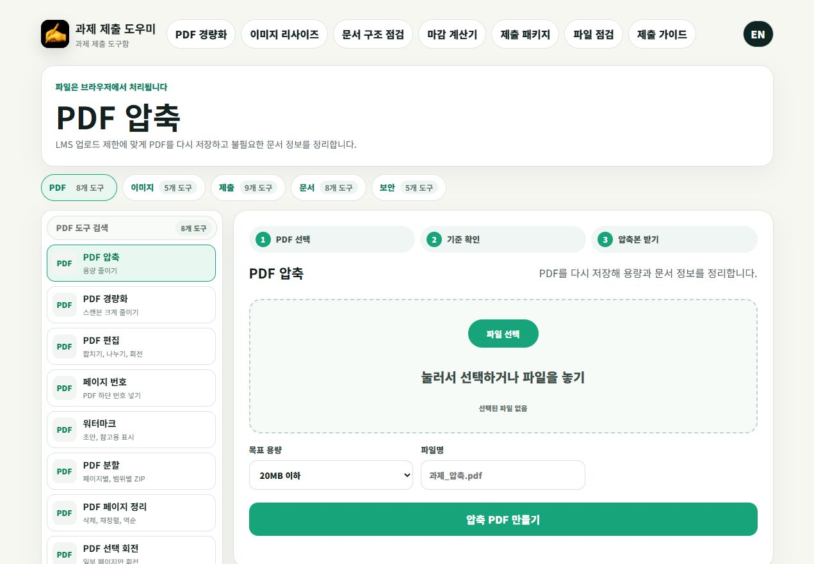
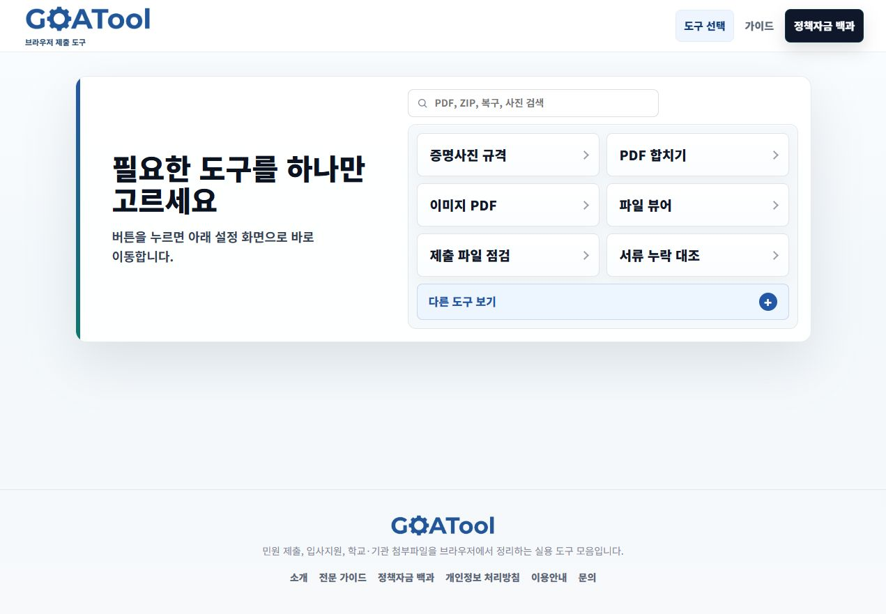

사용자가 고민하지 않도록 입력 항목을 최소화합니다.
Utility Flow
도구형 사이트는 사용자의 즉시 문제 해결이 핵심입니다.
도구형 페이지는 설명보다 입력과 결과가 먼저 읽혀야 합니다. J MEDIA는 사용자가 값을 넣고, 처리 과정을 이해하고, 결과를 저장하거나 다음 행동으로 넘어가게 설계합니다.

입력, 처리, 결과가 한 화면 흐름으로 이어져야 합니다.
결과가 왜 나왔는지 이해할 수 있는 중간 상태를 제공합니다.
저장, 공유, 문의, 다른 결과 확인으로 이어지는 버튼을 배치합니다.
